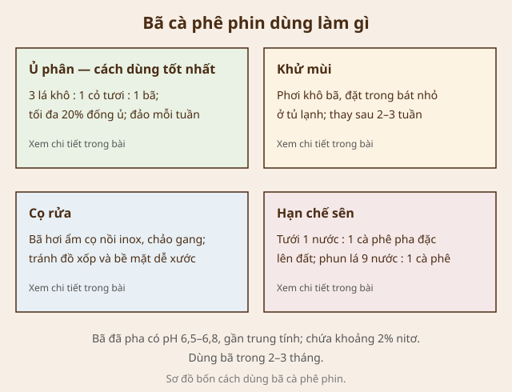

Bã cà phê phin dùng làm gì: khử mùi, làm phân bón, tẩy rửa
Tác giả: Ruler
Mỗi sáng pha một phin cà phê 25 g, bạn thu được khoảng một nắm bã cà phê ướt. Một tháng pha đều mỗi ngày sẽ tích lại khoảng 750g bã khô (25g/ngày) — con số này tính theo bã khô, chưa tính nước còn đọng trong bã ướt, nên bã ướt bạn cầm trên tay sẽ nặng hơn. Phần lớn bã này bị đổ thẳng vào thùng rác, trong khi nó còn dùng được cho nhiều việc trong nhà và ngoài vườn: ủ phân, khử mùi, cọ rửa và hạn chế sên, kiến. Bài này hướng dẫn cách dùng bã cà phê phin cho từng việc, kèm những giới hạn cần biết — vì dùng sai cách, bã cà phê cũng có thể làm hại cây hoặc làm xước đồ dùng.
Bài này chỉ nói về cách dùng bã cà phê trong nhà và vườn. Bài này không khẳng định bã cà phê chữa bệnh hay tốt cho sức khỏe của ai.
Trong bã cà phê còn lại những gì
Sau khi pha, bã cà phê vẫn giữ lại một phần chất của hạt. Theo bài viết của Khoa Khoa học và Công nghệ thực phẩm, Đại học Lạc Hồng, trong bã cà phê còn nhiều nhất là nitơ, rồi tới kali và magie; ngoài ra còn có photpho và canxi với hàm lượng thấp. Các chất này đều liên quan tới sự phát triển của cây trồng, và đó là lý do bã cà phê được dùng trong nông nghiệp.

Hình minh họa tự vẽ — không phải ảnh chụp thật.
Một con số cần ghi nhớ: bã cà phê đã pha chứa khoảng 2% nitơ theo thể tích, theo chương trình Master Gardener của Đại học Bang Oregon (OSU). Con số này nghe có vẻ nhiều, nhưng nitơ trong bã chưa dùng được ngay cho cây: vi sinh vật trong đất phải phân hủy bã trước, và trong lúc phân hủy chúng tạm thời giữ lại nitơ trong đất. Vì vậy bã cà phê chưa ủ không phải là phân bón nitơ, mà là nguyên liệu ủ phân. Hiểu đúng điểm này thì bạn sẽ không thất vọng khi rắc bã trực tiếp mà cây không tốt lên ngay.
Một điểm nữa cần nói rõ ngay từ đầu: bã cà phê có làm chua đất hay không? Hai nguồn nói khác nhau. Đại học Lạc Hồng viết bã cà phê có "đặc tính acid cao" và dùng được để điều chỉnh độ pH của đất. Ngược lại, chương trình Master Gardener của OSU viết rằng bã cà phê đã pha có độ pH gần trung tính, khoảng 6,5–6,8, vì phần lớn axit trong hạt đã tan vào nước cà phê khi pha. Theo OSU, bã đã pha không làm giảm pH đất đủ để có lợi cho cây ưa chua như đỗ quyên hay việt quất. Bài này ghi rõ cả hai ý kiến: nếu bạn định dùng bã để làm chua đất thì nên biết rằng nguồn từ OSU không ủng hộ cách dùng này, còn nếu bạn dùng bã để cải tạo đất và ủ phân thì cả hai nguồn đều đồng ý bã có ích.
Ủ phân: cách dùng chung của hai nguồn
Trong các cách dùng, bài này đặt ủ phân lên đầu: cả OSU lẫn nguồn 3 đều nói tới cách này, và ủ trước cũng là cách tránh cho bã tươi làm hại cây. OSU đưa ra công thức trộn theo thể tích: 3 phần lá khô, 1 phần cỏ tươi mới cắt và 1 phần bã cà phê. Bạn cũng có thể cho cả giấy lọc cà phê đã dùng vào đống ủ. Hai giới hạn quan trọng theo OSU: bã cà phê không nên chiếm quá 20% thể tích đống ủ — nhiều hơn có thể gây hại cho cây — và cần đảo đống ủ mỗi tuần, giữ ẩm đều.
Hai nguồn ủ phân nói khác nhau về tỉ lệ trộn, và bài này ghi cả hai để bạn tự chọn. OSU đưa tỉ lệ 3 phần lá khô : 1 phần cỏ tươi : 1 phần bã như trên. Bài báo trên Environmental Protection (nguồn 3) lại đưa tỉ lệ 1 phần lá : 1 phần cỏ tươi : 1 phần bã — tức nhiều bã hơn so với công thức của OSU — trong khi chỉ OSU đặt giới hạn bã không quá 20% thể tích đống ủ (nguồn 3 không ghi giới hạn này). Nếu mới ủ lần đầu, bạn có thể bắt đầu từ tỉ lệ 3:1:1 của OSU vì có nhiều lá khô hơn, đống ủ thoáng khí hơn; tỉ lệ 1:1:1 của nguồn 3 thì nhiều bã hơn và cần đảo đều tay hơn để đống ủ không bị nén chặt.
Vì sao phải ủ trước mà không rắc thẳng? Thử nghiệm nảy mầm ở Eugene mà OSU nhắc tới cho thấy bã cà phê chưa ủ, trộn vào đất trồng với tỉ lệ khoảng một phần tư thể tích, làm hạt xà lách nảy mầm kém và cây còi cọc. Nguyên nhân là bã chưa ủ tạm thời giữ nitơ trong đất và còn dư caffeine. Ủ phân vài tháng giải quyết cả hai vấn đề: vi sinh vật phân hủy bã, tỉ lệ carbon trên nitơ giảm dần, nitơ trở lại dạng cây dùng được. Vì vậy, nếu bạn có vườn, hãy dành một góc để ủ bã cùng lá khô và cỏ cắt, thay vì rắc bã tươi lên luống rau đang trồng.
Bảng dưới đây tự tổng hợp từ hướng dẫn của OSU, diễn đạt lại bằng lời của bài viết này.
| Cách dùng | Lượng | Cách làm | Lưu ý |
|---|---|---|---|
| Ủ phân | Tối đa 20% thể tích đống ủ | Trộn 3 phần lá khô, 1 phần cỏ tươi, 1 phần bã | Đảo mỗi tuần, giữ ẩm |
| Trộn trực tiếp vào đất | Lớp bã dày khoảng 1,3 cm, trộn vào 10 cm đất mặt | Trộn đều, thêm nguồn nitơ (phân chuồng ủ, cỏ cắt) cùng lúc | Không rắc dày thành lớp, không gieo hạt ngay sau khi trộn |
| Làm lớp phủ mặt đất | Lớp mỏng, phủ thêm lá hoặc vỏ cây lên trên | Rải bã rồi phủ lá khô lên | Bã phơi khô sẽ chống thấm nước, cây không nhận được nước |
| Bón cho cây cảnh trong chậu | Một lượng nhỏ, đã ủ trước | Trộn bã đã ủ vào đất trồng | Không bón quá nhiều; cây bị khô lá và chậm lớn nếu bón thừa |
Đại học Lạc Hồng cũng khuyên tương tự ở điểm cốt lõi: bã cà phê phải ủ kín một thời gian rồi mới đem bón, và bón quá tay làm lá cây khô lại và cây lớn chậm hẳn. Hai nguồn gặp nhau ở kết luận này, dù cách diễn đạt khác nhau.
Một lợi ích phụ của việc ủ bã: giun đất thích ăn bã cà phê. Theo OSU, giun đất và giun đỏ kéo bã xuống sâu trong đất, giúp cải thiện cấu trúc đất. Khi vi sinh vật ăn bã, chúng tiết ra chất kết dính các hạt đất thành cụm bền, giúp đất thoát nước tốt hơn.
Khử mùi: tủ lạnh, tay, giày và xe
Bã cà phê hút mùi tốt, nên cách dùng phổ biến thứ hai là khử mùi. Đại học Lạc Hồng hướng dẫn: lấy một ít bã cà phê đặt vào phía trong tủ lạnh để khử mùi hôi, và khuyên thay bã sau 2–3 tuần để giữ hiệu quả. Cách làm cụ thể do bài viết gợi ý: phơi khô bã rồi cho vào một cái tách hoặc bát nhỏ, đặt trong tủ lạnh. Gợi ý thêm của bài viết: muốn khử mùi hành, tỏi hay các loại thực phẩm nặng mùi bám trên tay, hãy dùng bã cà phê chà xát một lúc rồi rửa lại bằng xà phòng.
Cùng nguyên tắc hút mùi đó, bài viết gợi ý thêm: dùng bã cà phê khô để khử mùi giày (đặt một ít bã khô vào đôi giày vừa đi, để qua đêm), khử mùi hộp đựng thức ăn lâu ngày, hoặc khử mùi trong xe. Với xe hơi, đặt một bát nhỏ bã khô dưới ghế, thay bã sau 2–3 tuần như cách làm với tủ lạnh.
Một lưu ý về bảo quản bã trước khi dùng: bã cà phê ướt để lâu sẽ mốc. Đại học Lạc Hồng khuyên bảo quản bã trong tủ lạnh để dùng dần, hoặc để nơi khô thoáng tránh ẩm mốc, và chỉ nên sử dụng bã trong vòng 2–3 tháng, vì để quá lâu bã mất dần mùi hương và các hoạt tính. Nếu bã đã mốc khi cất trong hộp kín, theo OSU, mốc đó thực ra góp phần phân hủy trong đống ủ, nên bã mốc vẫn dùng được để ủ phân, nhưng không nên dùng để khử mùi trong tủ lạnh hay chà tay nữa.
Cọ rửa: dùng hạt bã làm chất mài mòn nhẹ
Bã cà phê có hạt mịn nên dùng được như chất mài mòn nhẹ để cọ rửa. Đại học Lạc Hồng mô tả bã như một chất tẩy rửa tự nhiên, tẩy được vết ố bám trên dụng cụ nhà bếp. Cách làm thực tế: lấy một nắm bã cà phê còn hơi ẩm, chà lên mặt chảo, bếp hoặc bồn rửa có vết ố, rồi rửa lại bằng nước sạch.
Có hai giới hạn cần nhớ. Thứ nhất, không dùng bã để cọ đồ bằng xốp, vì bã để lại vết nâu, làm hỏng bề mặt xốp, theo cảnh báo của Đại học Lạc Hồng. Thứ hai, gợi ý của bài viết: không dùng bã để cọ bề mặt dễ xước như chảo chống dính, mặt men bóng hay mặt kính, vì hạt bã có thể để lại vết xước mờ. Hãy thử trước ở một góc khuất, thấy ổn mới cọ rộng ra. Với nồi inox, chảo gang hay bồn rửa inox, bã cà phê dùng tốt và không để lại mùi hóa chất.
Hạn chế sên và côn trùng trong vườn
Bã cà phê còn được dùng để hạn chế sên và một số côn trùng trong vườn, nhưng cần hiểu đúng mức độ: đây là biện pháp hỗ trợ, không thay thế việc chăm vườn. Theo OSU, bã cà phê giúp ức chế một số bệnh thối rễ và côn trùng gây hại, và nước cà phê pha đặc có thể dùng làm dung dịch tưới diệt sên: pha 1 phần nước với 1 phần cà phê đã pha, tưới lên đất. Dung dịch phun lá thì pha loãng hơn nhiều: 9 phần nước với 1 phần cà phê.
Đại học Lạc Hồng cũng ghi rằng mùi bã cà phê có thể xua một số loài gây hại khác — kiến, gián chẳng hạn — khi đặt một ít bã ở góc tối, và thành phần caffeine cùng diterpenes trong bã có liên quan tới tác dụng này. Bài này không khẳng định bã cà phê "tiêu diệt" côn trùng, vì các nguồn chỉ mô tả tác dụng hạn chế và xua đuổi. Cách dùng thực tế và an toàn nhất là rắc một lớp mỏng bã quanh gốc cây, kết hợp với việc ủ phân như đã nói ở trên, thay vì kỳ vọng bã thay thế thuốc trừ sâu.
Một cảnh báo quan trọng từ OSU: bã cà phê chưa ủ rắc trực tiếp lên đất có thể ức chế hạt nảy mầm và làm cây con chậm lớn, do dư lượng caffeine. Vì vậy đừng rắc bã tươi lên luống vừa gieo hạt. Hãy ủ trước, hoặc rắc quanh gốc cây đã lớn, với lớp mỏng khoảng 1,3 cm trộn vào 10 cm đất mặt như bảng trên.
Checklist dùng bã cà phê: nên và không nên
| Việc | Nên | Không nên |
|---|---|---|
| Ủ phân | Trộn 3 lá khô : 1 cỏ tươi : 1 bã; tối đa 20% đống ủ; đảo mỗi tuần | Đổ bã tươi thành đống dày, không trộn lá khô |
| Bón trực tiếp | Trộn lớp mỏng 1,3 cm vào 10 cm đất mặt, thêm nguồn nitơ | Rắc dày lên luống vừa gieo hạt; bón quá nhiều |
| Khử mùi | Phơi khô bã, đặt trong bát nhỏ ở tủ lạnh, thay sau 2–3 tuần | Dùng bã ướt, bã mốc để khử mùi trong tủ lạnh |
| Cọ rửa | Cọ nồi inox, chảo gang, bồn rửa bằng bã hơi ẩm | Cọ đồ xốp, chảo chống dính, mặt men bóng, mặt kính |
| Hạn chế sên | Tưới dung dịch 1 nước : 1 cà phê pha đặc lên đất | Kỳ vọng bã thay thế thuốc trừ sâu |
| Bảo quản bã | Cất trong hộp kín, dùng trong 2–3 tháng | Để bã ướt ngoài không khí lâu ngày rồi dùng để khử mùi |
Kết luận
Bã cà phê phin không phải rác, nhưng cũng không phải "thần dược" cho vườn. Cách dùng được cả hai nguồn cùng nhắc tới là ủ phân. Theo công thức của OSU: trộn 3 phần lá khô, 1 phần cỏ tươi, 1 phần bã, giữ bã dưới 20% thể tích đống ủ, đảo mỗi tuần. Bón trực tiếp thì chỉ trộn lớp mỏng khoảng 1,3 cm vào 10 cm đất mặt, thêm nguồn nitơ cùng lúc, và tuyệt đối không rắc bã tươi lên luống vừa gieo hạt. Khử mùi thì phơi khô bã, đặt trong tủ lạnh và thay sau 2–3 tuần. Cọ rửa thì dùng bã hơi ẩm cho đồ inox và gang, tránh đồ xốp và bề mặt dễ xước. Về độ pH, hai nguồn nói khác nhau — Đại học Lạc Hồng cho rằng bã có tính axit giúp cân bằng pH, còn OSU đo bã đã pha ở pH 6,5–6,8, gần trung tính, không đủ làm chua đất — nên đừng dùng bã với mục đích làm chua đất. Dùng đúng cách, một nắm bã mỗi sáng sẽ thành phân ủ cho vườn, thay vì thành rác.
Nguồn tham khảo
- Đại học Lạc Hồng, Khoa Khoa học và Công nghệ thực phẩm, "Đặc tính và công dụng của bã cà phê" — thành phần chính nitơ, kali, magie; photpho và canxi hàm lượng thấp; khử mùi tủ lạnh, thay bã sau 2–3 tuần; ủ kín trước khi bón, không bón quá nhiều; chỉ dùng bã trong 2–3 tháng; không dùng cho đồ xốp (truy cập 23/11/2026): https://lhu.edu.vn/112/38714/Dac-tinh-va-cong-dung-cua-ba-ca-phe.html
- Douglas County Master Gardeners (OSU Extension), "Ask A Master Gardener – Coffee Grounds" — bã đã pha pH 6,5–6,8 gần trung tính; khoảng 2% nitơ theo thể tích; trộn 1/2 inch bã vào 4 inch đất mặt; ủ phân 3 phần lá : 1 phần cỏ tươi : 1 phần bã, tối đa 20% thể tích đống ủ, đảo mỗi tuần; dung dịch diệt sên 1 phần nước : 1 phần cà phê, phun lá 9 phần nước : 1 phần cà phê (truy cập 23/11/2026): https://www.douglascountymg.org/ask-a-master-gardener-coffee-grounds/
- Environmental Protection (OSU Extension, Cindy Wise), "Coffee a Good Substitute for Manure in the Garden" (17/7/2008) — thử nghiệm nảy mầm ở Eugene: bã chưa ủ trộn khoảng một phần tư thể tích đất làm hạt xà lách nảy mầm kém và cây còi cọc; bã khoảng 2% nitơ theo thể tích; bã đã pha pH 6,5–6,8 gần trung tính; ủ phân 1 phần lá : 1 phần cỏ tươi : 1 phần bã theo thể tích, đảo mỗi tuần, dùng được sau 3–6 tháng; bã mốc vẫn dùng được để ủ phân; đống ủ có 25% bã giữ 135–155°F ít nhất 2 tuần; tỉ lệ carbon/nitơ của bã khoảng 20:1 (truy cập 23/11/2026): https://eponline.com/articles/2008/07/17/coffee-a-good-substitute-for-manure-in-the-garden.aspx?admgarea=ht.waste